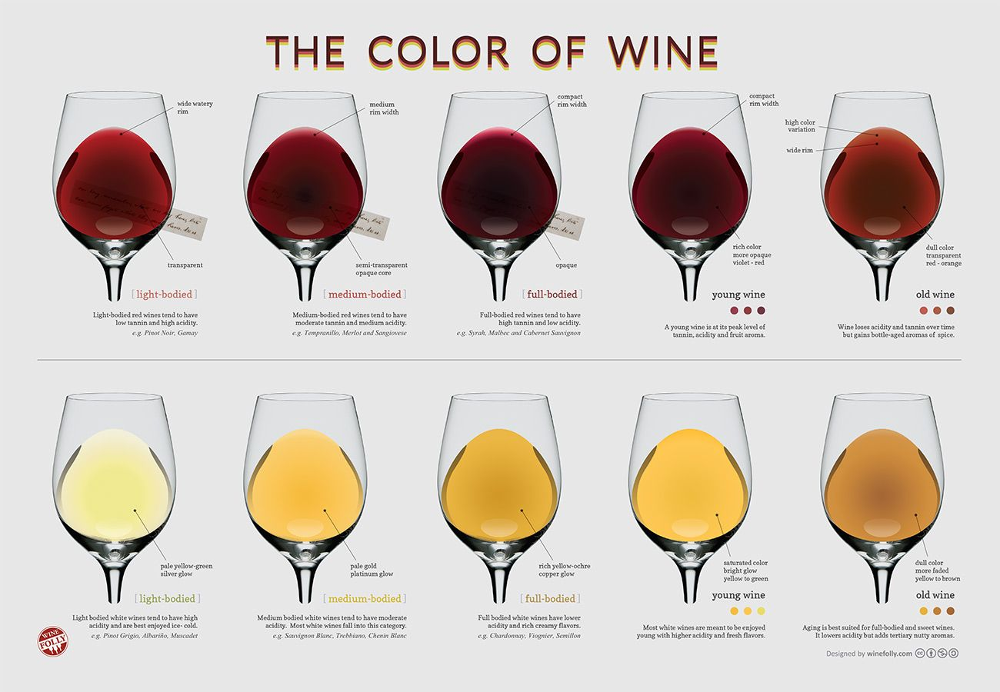

a digital media based synesthesia project
no. unfortunately it does not work on a tablet or phone.
* disclaimer : i know absolutely nothing about wine.
this project is about the augmentation of taste.
the way our parents have taught us to not lick everything we see for the sake of hygiene and dignity (?) stopped us from exploring the world using our most interesting physiological capability of that can provides data for our perception and understanding of this world. have you wondered what a laptop taste like? what the sky taste like? what anxiety taste like? this concept revolves around the idea of computerizing the un-tasteable things around us (a.k.a. the ambiance) through purely visual data processing. a sommelier or wine steward, a trained and knowledgeable wine professional, can often identify the characteristics of wine by just observing. the same concept is adapted in this situation.
i took information regarding the association between qualities and colors of wine, including the following:
1. The Sweetness
Your ability to judge the sweetness of the wine begins at the tip of the tongue. Do you feel a tingling sensation? Try to focus on that one endpoint on your tongue to determine the wine’s sweetness. This is an indication that the wine has a slightly high level of residual sugar. It should also have a high viscosity. So if you’re swirling your wine, it should have a delayed ‘swish’ due to the body of the wine. this quality is often associated with the vibrance and lightness of the wine's color.
2. The Acidity
This should not be confused with having a high concentration of alcohol. Wines with higher levels of acidity may taste tart and zesty – a bit lighter than others. When you take a sip, you should feel a tingling sensation on the front and sides of your tongue. However, if you’d rather choose a wine that is more ‘rich’, then you need a wine that is less acidic.this quality is often associated with the hue of the wine, whether if it is more red, or more purple.
3. Tannin Levels
Tannin is the compound that adds bitterness to a wine. This is usually found in the skin of the grapes and in the bark of an aging oak tree used in the barrels to age the wine. Tea has high levels of tannin. So, if you want a taste of tannin, try placing a tea bag on your tongue, and keeping it there for about 5 seconds. It begs the question though: if tannin is associated with that astringent taste, why do you need it in your wine? Well, for precisely that reason.Tannin is the element in your wine that adds texture, complexity, and balance. It makes your wine last longer. If you choose a wine that is high in tannin, you should feel a bitter taste in the front and sides of the tongue. It will also leave a lingering dry sensation in your mouth. this quality is often associated with the redness and density of the wine.
4. Fruity Flavor
If you take a sip of wine and can clearly determine mostly fruit flavors, the wine is considered fruity. For instance, some wines may have strong notes of strawberries while others may have blueberry, blackberry, or a combination of flavors. Different types of wine will have varying levels of fruitiness.Fruity red wines can be dominant in raspberry, blackberry, or blueberry. White wines can have citrus (lemon, lime) or peachy notes. this quality is often associated with lightness of the wine's color.
5. Light or Full-Bodied
The body of the wine is not determined by one single factor, but rather, the combination of many factors like residual sugar and the alcohol by volume (ABV). Wine with high alcohol concentration will taste fuller than one with low alcohol concentration. But overall, the body of the wine – whether it is light, medium or full-bodied – is determined by taking a snapshot of many factors. To simplify, if the wine’s taste lasts longer in your mouth – say 30-40 seconds – it is full-bodied. this quality is more subtle, but light wine do appear to have a cooler tone in general.
5. sediment
semi-solid residue. this is essentially "noise".
so i created a mini p5 program that uses the computer's webcam, and analyzed the input colors of the webcam images into processable numbers to create the data associated with the "taste" of the ambient environment.